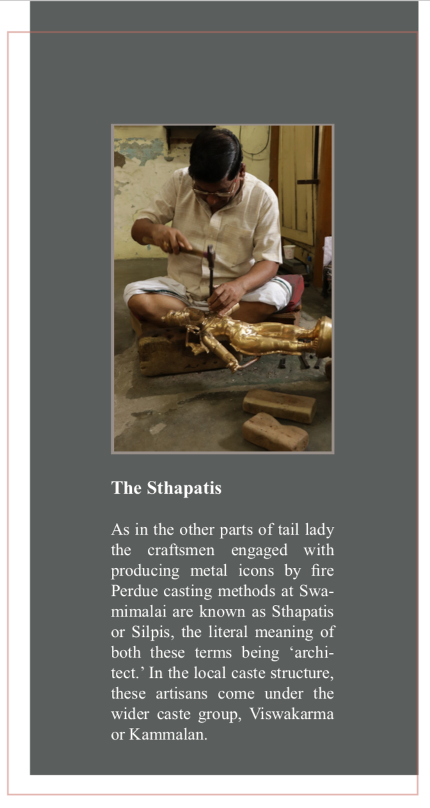

Traditionally, the Indian craftsman traces his descent from “the Viswakarma, Lord of the arts,
master of a thousand handicrafts, car- penter of the gods and builder of their palaces divine;
fashioner of every jewel, first of craftsmen, by whose art men live, and whom a great deathless
god, they continuously worship.” Metal icon makers in different parts of the country belong to
different castes and communities.
The Bastar of Madhya Pradesh belong to the Bhareva or Kaser caste; in Orissa the craftsmen
engaged in icon-making are known as Dokras; in West Bengal they belong to the Kanshari,
Kaikya Mal and Jadu Patua or Dheppo caste; they are known as Kaseras in Uttar Pradesh,
Shipasaris in Kerala or Sthapatis in Tamil Nadu.
According to Manushya Purana, artisans belong to five different categories according to their
social status. They are as follows- Manu (iron-smith), Maya (carpenter), Twastha (Vessel maker),
Viswajham (goldsmith) and Silpi (icon worker). At present five sub-groups are also recognized
under the Kammalans or Viswakarmas. They are, however, named differently and the hierarchy
of their social status is also different from what has been mentioned in Manushya Purana. The
five sub-groups inorder of their social status as recognized locally are as follows — Pathar or
Thattan (goldsmith); Sthapati (icon worker); Kannan (utensil maker); Thachan or Achari
(carpenter) and Kollan (iron

smith). Thus though in earlier period the icon makers were at the
lower round of the social ladder in the category of artisans, now they occupy a much better
position.
The tradition of origin of the Sthapatis however goes far beyond the traceable genealogy. The
tradition is that of a sacred origin. As narrated by Srikanda Sthapati, it is as follows:
“ Brahma created the Kammala or the Viswakarma community inorder to ful- fill the needs of
the human race. The primary need was to have implements and told to work with, thus he
created the ironsmith. Man then wanted to have a house to stay in and so Brahma created a
carpenter. After having got the house, man wanted to make some vessels to cook food
therefore Brahma created the vessel maker. After having satisfied himself with these primary
needs, man desired to decorate himself and so brahma created the goldsmith. When all the
needs were satisfied, with a heart full of gratitude, man wanted to pay respects to the divines
who gave him all that he needs. So the Silpi or the Sthapati who is an Icon Maker was created
to make Silpas or icons.
The Sthapatis of Swamimalai believe that they had a common ancestor in brothers namely
Ahoraviraputhrarachari and Swaminathachari. These two brothers were brought from Jinchi in
South Arcot about 350 years ago, by the then ruler of Thanjavur for making idols for the
Subrahmanyan temple, which was under construction at that time. One of the two brothers had
a son, Muthuswamy, who is reported to have taken up for the first time the making of metal
images as his profession. He began to use the sons named Doraisamny, Annasamy,
Ramaswamy and Sadasivan respectively to propagate and pro- gress his line of work. All the
Sthapatis of Swamimalai trace their origin from these four sons of Muthuswamy.
Preparing the copper for melting
Their ancestors found the clay made from the fine silt in the Cauvery’s bend was exceptionally
suitable for the making of moulds. Thus his group of sthap- athies settled here, and their
descendants continue to make the famed Chola bronzes.
Later they also migrated to foreign countries for work ordered bronze idols for the temples built
there and also for their pooja rooms and showcases. When a large number of Tamilians beganto settle abroad, they started to construct temples and ordered for idols from Swamimalai.
“Around 75% of our export orders are for temples built around the world by Tamils. The
remaining are individual orders,” says Srikanda Sthapathy, son of Devasenapathy Sthpaty.
With the exception of the 40 Sthapathy families in Swamimalai, there are nu- merous other
families that perfect the art of bronze sculpting using the lost wax process. Members of a large
number of families are trained in government institutes like Poompuhar every year for a
duration of 3 years and come out as exceptional sculptors at the end of the day. A lot of their
work can be collec- tively seen at the society showroom in Swamimalai.
Srikanda Sthapathy, who along with his brothers Radhakrishna Sthapathy and Swaminatha
Sthapathy are co running their ancestral unit Sri Jayam Industries, manufacturers of Chola
Bronzes and exporters with the name Sirpakalamani S. Devasenapathy Sthpati & Sons.
A Sthapati looks upon his coming into being as culmination of man’s aspira- tions for a higher
and higher level, on the one hand, and man’s satisfaction of the physical and mental needs on
the other.
The dwelling houses of the Sthapatis are outwardly not different from those of the others. They
are constructed in such a way that they can be used both as dwellings and as workshops. A
typical house consists of a central open courtyard with interconnected raised verandas all
around, leading to dwelling rooms. The gate leading to the house in front; there is also an exit
at the back, which leads to the compound behind. The smelting of materials metals an dthe
casting processes are done wither in the central open space or if the space is inadequate, in
the compound behind the house. The other processes are carried out in the open verandas.
Occupational History of the craftsmen and craftsmen households.